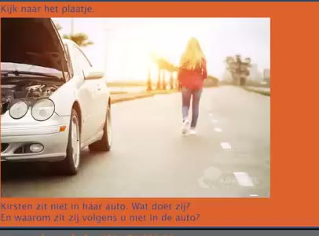
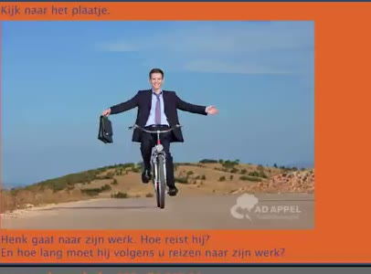
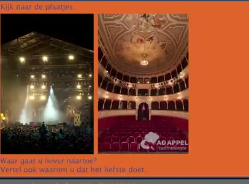
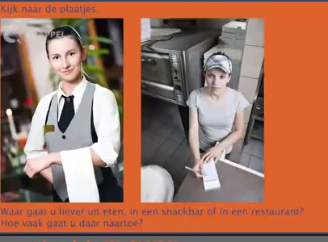
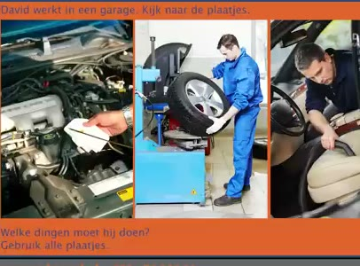
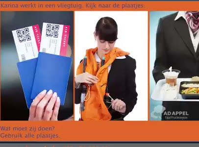

🔊 5 題 🖼️ 6 題 | YouTube ▶
🗣 Ik ga drie keer per jaar op vakantie. Hoe vaak gaat u op vakantie? En waar gaat u dan naartoe?
我每年去三次度假。您多久去一次度假？ 您通常去哪裡度假？
Ik ga één keer per jaar op vakantie. Ik ga naar Thailand. Ik spreek vier talen en mijn moedertaal is Nederlands.
我每年去一次度假。 我去泰國。 我會說四種語言，我的母語是荷蘭語。
🗣 Wat is uw moedertaal en welke talen spreekt u?
您的母語是什麼？您會說哪些語言？
Mijn moedertaal is Engels. Ik spreek Engels en een klein beetje Nederlands. Ik heb twee zussen en veel neven en nichten.
我的母語是英語。 我會說英語和一點點荷蘭語。 我有兩個姐妹和很多表兄弟姊妹。
🗣 Wat kunt u vertellen over uw familie?
您可以說說您的家人嗎？
Ik heb twee broers en geen zussen. Mijn familie is groot. Ik heb veel ooms en tantes en neven en nichten. Mijn dag begint altijd om zes uur in de ochtend.
我有兩個兄弟，沒有姐妹。我的家庭很大。 我有很多叔叔、阿姨和表兄弟姊妹。 我每天早上六點開始一天的生活。
🗣 Hoe laat begint uw dag en wat doet u dan het eerst?
您幾點開始一天？您起床後會先做什麼？
Ik sta op om acht uur. Ik drink dan eerst koffie. Ik woon in een rijtjeshuis in Heemstede.
我八點起床。我會先喝咖啡。 我住在海姆斯特德的一棟連棟房子裡。
🗣 Waar woont u en wat voor contact heeft u met uw buren? Ik woon in Amsterdam en ik heb weinig contact met de buren. Ik doe allerlei dingen om gezond te blijven. Wat doet u allemaal om gezond te blijven?
您住在哪裡？您和平常與鄰居有什麼聯繫？ 我住在阿姆斯特丹，與鄰居的聯繫很少。 我做各種事情來保持健康。 您都做什麼來保持健康？
Ik doe veel aan sport. Ik eet niet zoveel en ik drink geen alcohol.
我做很多運動。 我吃得不多，也不喝酒。

🗣 Kijk naar het plaatje. Kirsten zit niet in haar auto. Wat doet zij en waarom zit zij volgens u niet in de auto?
請看圖片。 Kirsten沒有坐在她的車裡。 她在做什麼？您認為為什麼她不在車裡？
Zij loopt op straat. Haar auto is kapot.
她在街上走路。她的車子壞了。

🗣 Kijk naar het plaatje. Henk gaat naar zijn werk. Hoe reist hij en hoelang moet hij volgens u reizen naar zijn werk?
請看圖片。 Henk去上班。 他怎麼去的？您估計他去上班要多久？
Hij gaat met de fiets. Hij reist ongeveer veertien minuten.
他騎自行車去。 他大約騎了十四分鐘。

🗣 Kijk naar de plaatjes. Waar gaat u liever naartoe? Vertel ook waarom u dat het liefst doet.
請看圖片。 您比較喜歡去哪裡？ 請說明為什麼您喜歡去那裡。
Ik ga liever naar een concert. Ik hou van muziek.
我比較喜歡去音樂會。我喜歡音樂。

🗣 Kijk naar de plaatjes. Waar gaat u liever uit eten? In een snackbar of in een restaurant? Hoe vaak gaat u daar naartoe?
請看圖片。 您比較喜歡去哪裡吃飯？ 快餐店還是餐廳？ 您多久去一次？
Ik ga liever naar een snackbar. Ik ga elke week.
我比較喜歡去快餐店。我每週都去。

🗣 David werkt in een garage. Kijk naar de plaatjes. Welke dingen moet hij doen? Gebruik alle plaatjes.
David在車庫工作。請看圖片。 他必須做哪些事情？請用所有圖片。
Hij moet de banden controleren. Hij moet de olie controleren. Hij moet ook de auto schoonmaken.
他必須檢查輪胎。 他必須檢查機油。 他也必須清理車子。

🗣 Carina werkt in een vliegtuig. Kijk naar de plaatjes. Wat moet zij doen? Gebruik alle plaatjes.
Carina 在飛機上工作。看看這些圖片。 她應該做什麼？使用所有圖片。
Zij controleert de kaartjes. Zij geeft instructies. Zij brengt eten bij de passagiers.
她正在檢查票券。 她給予指示。她為乘客送餐。